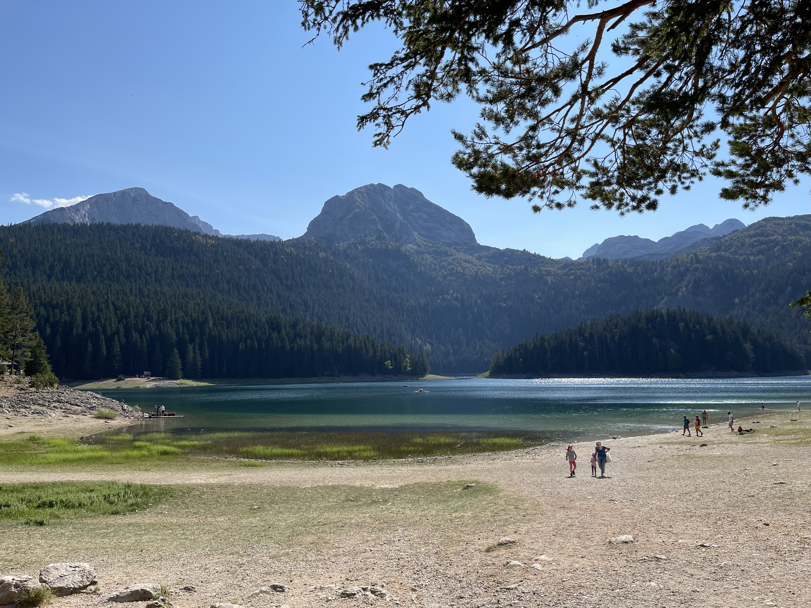
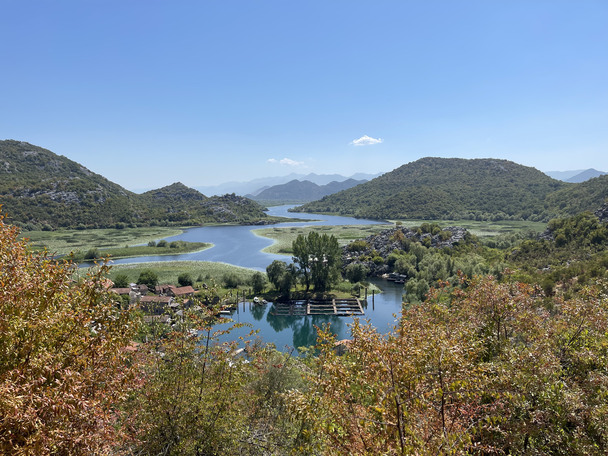
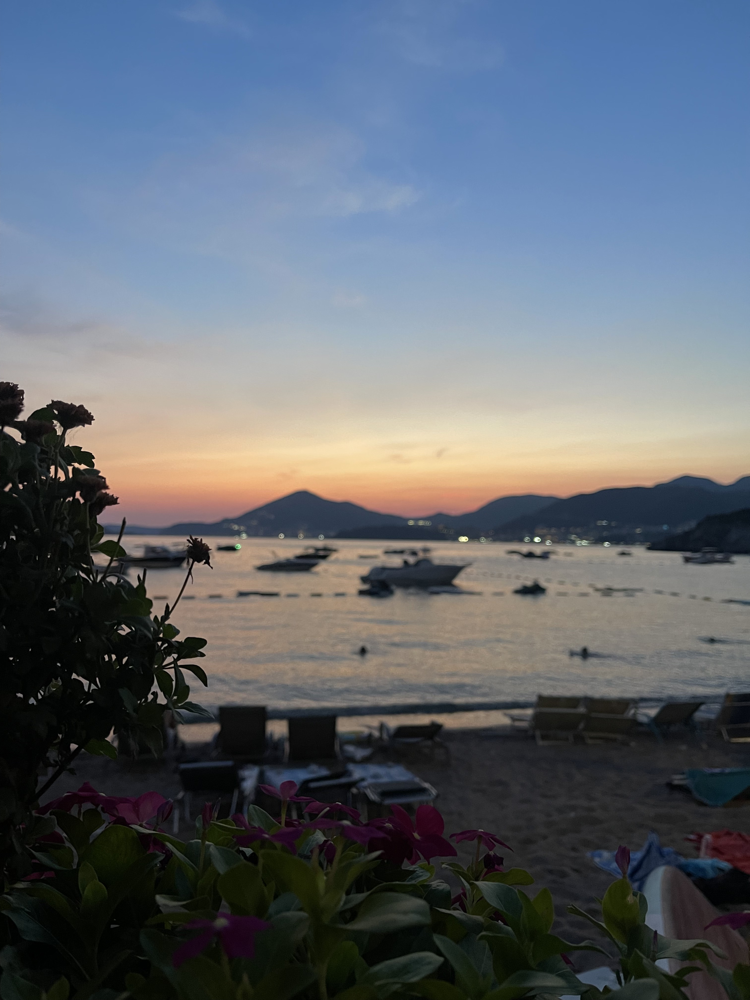
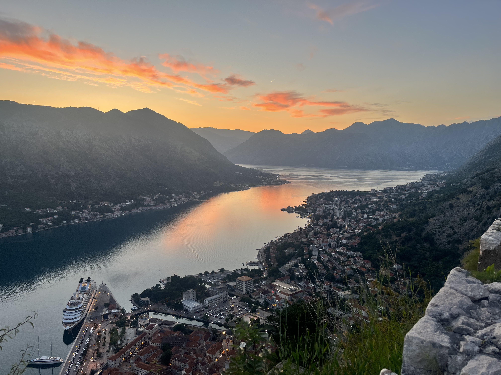

A example10-day Itinerary with tips
Montenegro is a beautiful country that has everything, seas, mountains, historic towns, food (that's pretty much it). It is very small so you can visit everything pretty quickly but public transportation is a joke so I would recommend renting a car and driving wherever you want. Best time to go is June or September, July and August tend to very busy. Hotels in Montenegro are usually booked on Booking.com This itinerary is going to be modular so you guys can rearrange it how you would like except for days 1, 9, and 10 which you sort of have to keep. Day 1: Arrival to Podgorica airport (usually cheapest) and getting a rent-a-car. For food go either here if you want fancy (pricey compared to rest of Montenegro but not bad) Or where the locals go (me) Get to your hotel and settle in and walk around. Day 2-5: Coast I would position myself in a hotel in or near Budva. Budva is in the centre of the coast, has a promenade, an old town. Depending on when you go it could be really lively. Plenty of night clubs and etc, you can check it out for yourself. Day trips: - Kotor&Perast: Absolutely stunning Venetian cities, Perast is very small but pretty. Kotor is a whole fortified town and has plenty of restaurants and cats. You absolutely have to climb up to San Giovanni fortress. If you google it, there is a secret path around the security gate so you don't have to pay the entrance fee. You can easily spend the whole day there and I recommend walking down from the fortress at sunset and take in the town at night. - Lovćen Gondola. So there is a Gondola (like a zip line thing) that takes you up a mountain and there is a cafe at the top and the view is insane, you could also instead drive up to the mountain and the mausoleum but this is probably cooler. - Ulcinj, a bit of a drive away but has sand beaches. There are two, Big and Small beach (i kid you these are the names). The small one is directly in the town below the old fort. That part of Montenegro is mainly Albanian so make sure to try their baked goods. - Sveti Stefan is an island turned penninsula and it is stunning, maybe research the viewpoints around there and the beaches and restaurants. - Beach day: Probably go out of Budva slightly or anywhere else, look up nice beaches. Day 6-8: Mountains There are roughly 3 locations to choose from here. Durmitor, Bjelasica, Prokletije. Bjelasica or the town Kolašin is probably the best overall pick for me. It has the most to see. Biograd lake (ancient rainforest), Tara Canyon white water rafting (super fun), it is very quick to get there from the capital and you can drive to other bits from there as well. Durmitor is lovely, the Black Lake, Tara river extends to there, and there is a bridge over the canyon where you can bungee jump Prokletije (the Accursed mountains) are the ones we share with Albania. These are a bit difficult to get to but for example Dolina Grebaje has the most stunning views I have ever seen. These are all national parks and they may charge for entrance (a few euros per person) So make it your own, you don't have to hit all of these places but pick your favourites. In all of these you could rent a lodge in the forest somewhere and just walk around taking in the fresh air and views. Day 9: Return to Podgorica and immediately leave to go to lake Skadar. There are boat tours you could do, there are experiences where they cook the local fish and you get to swim. Many options but if you are driving you need to visit: Pavlova Strana and Rijeka Crnojevića. These are my ends so I am particularly fond. Return to Podgorica in the evening, walk around, explore (see why I left). Day 10: Prepare for your flight and pick up breakfast from one of the best bakeries ever (multiple locations). Get burek (vegan, vegetarian options possible) but get meat. Get to airport.
General Food Tips
For food in general, the seaside is better with fish, the north is better with meat and cheese. Vegan options do exist although not revolutionary. Vegetarian is mainly cheese which I happily encourage. Food staples: Roštilj (BBQ) in particular Ćevapi (balkan sausage (must)), Local fish dishes like carp or girice. But also ask the people working there what their favourites are of the classics. Rule of thumb, if they are trying to get you to come in with a person standing outside and yapping to you, don't bother going there. Unless you go to a fancy place the portions will be quite large.
Select Photos of Montenegro
All of the photos on this page are mine.






Some food photos: Carp and Eel, Zeta, near Skadar | Squid, Ćevapi, Carp
{kind=link}
{kind=link}